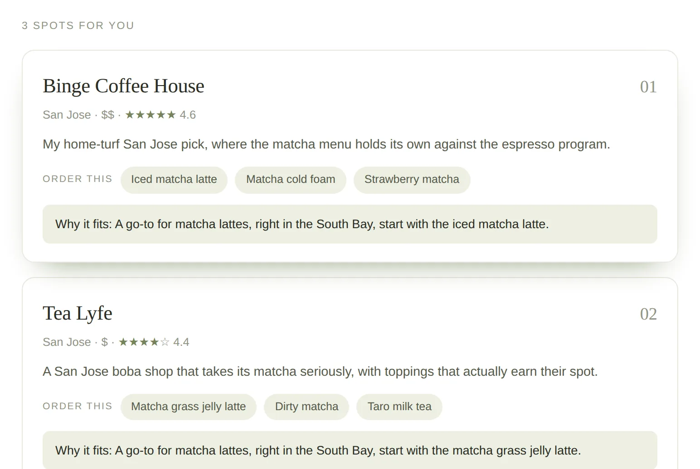

The matcha map I kept drawing for friends
Friends kept asking me the same question: "where should I get matcha around here?" The answer always depended on where they were, whether they wanted a latte or the real whisked thing, and if they were studying or on a date. So I turned my mental map into an app: pick a part of the Bay, a craving, and a vibe, and it ranks the best spots, from Binge Coffee House in San Jose to Japantown soft serve, with the most-ordered drinks at each one.
Highlights
- Covers the whole Bay: San Francisco, East Bay, South Bay, and the Peninsula
- Filters by craving: lattes, traditional whisked matcha, desserts, or boba twists
- Matches the vibe, whether that's a study session, a date, or grab and go
- Shows each spot's most popular drinks so you know what to order
- Explains why each pick fits, with a one-line reason per spot
Examples
A real search: matcha in the South Bay, ranked with the drinks to order and a reason for each pick.

Live demo
Fully working: pick where you are in the Bay, what you're craving, and a vibe below.